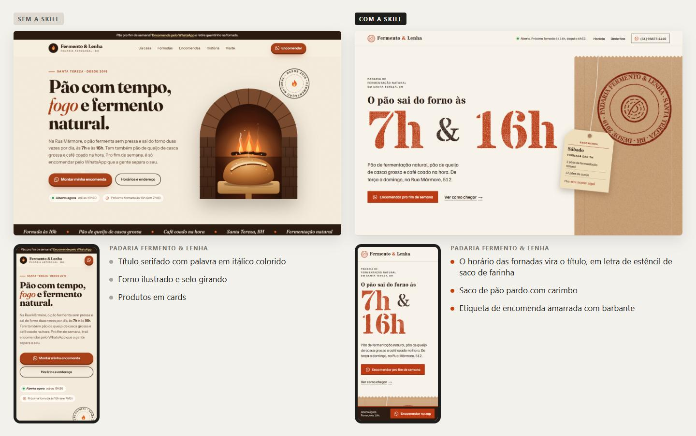

Skill para o Claude Code · instalada
Seu site é a vitrine. Ela precisa ter a sua cara.
A Vitrine cria sites, landing pages e portfólios com personalidade, para você e para os seus clientes. Ela começa descobrindo o que só aquele negócio, ou você, tem, e usa isso no visual, no texto e nos detalhes.
Volte ao Claude Code e digite:
/vitrine:inicioEle confere se o seu computador está pronto e mostra por onde começar.

Conte para quem você faz sites e mande de 3 a 5 referências que você admira, em link ou print.
/vitrine:perfilUma mensagem pronta para o WhatsApp do cliente, com as perguntas e a lista de fotos.
/vitrine:briefing Padaria do SérgioCole a resposta do cliente ou mande o site, o Instagram ou o Google dele.
/vitrine:aproveitar <link>2 ou 3 caminhos visuais, em HTML e PDF, para o cliente escolher.
/vitrine:conceitosO site pronto, conferido no computador e no celular antes de chegar até você.
/vitrine:siteCarimbe cada site e marque no print o lugar exato de cada ajuste. A skill aprende o seu gosto.
/vitrine:avaliarOs comandos são só atalhos. Também dá para pedir falando normalmente: "faz o site da barbearia do Marcos em Contagem" ou "faz o meu portfólio".
/vitrine:inicio. Se faltar algo no computador, ele explica o que instalar./vitrine:perfil. Leva uns 5 minutos, e todo site sai mais com a sua cara./vitrine:briefing, ou peça o seu portfólio.